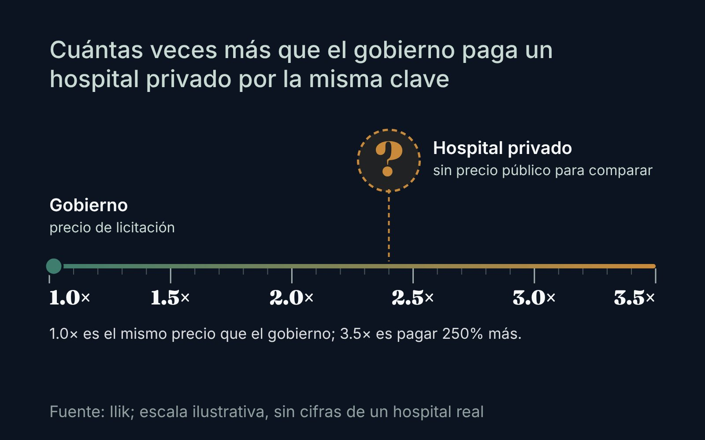
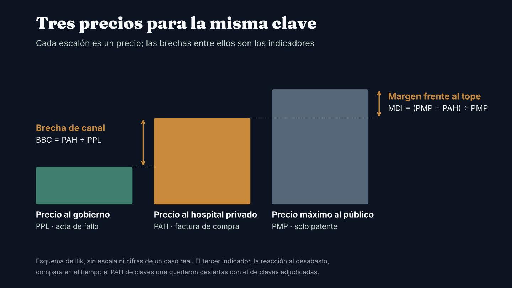
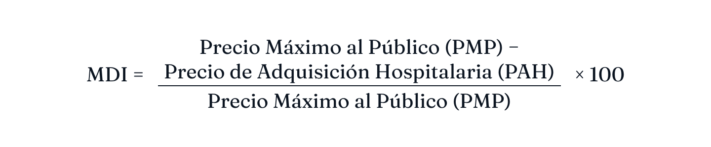
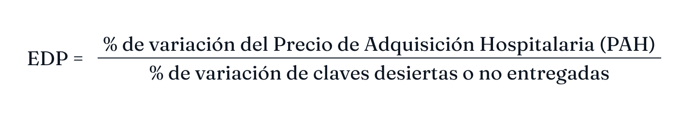

Observatorio / Compras públicas de medicamentos
Investigación¿Cuánto más paga un hospital privado que el gobierno por el mismo medicamento? Tres indicadores para medirlo
El gobierno publica clave por clave lo que paga. El hospital privado no tiene con qué compararse. Proponemos tres medidas para cerrar esa brecha de información, y las reglas para no engañarse con ellas.

Cada licitación consolidada deja un precio público por clave1. Ese dato existe para el gobierno y para cualquiera que lo busque en ComprasMX. Lo que no existe es su contraparte: cuánto paga un hospital privado por esa misma clave, del mismo fabricante y en la misma presentación. Sin esa pieza, la conversación sobre si el sector privado "paga de más" se queda en anécdota.
En el Observatorio vamos a medir esa diferencia con tres indicadores. Aquí explicamos qué mide cada uno, con qué datos se calcula y qué puede salir mal.

1. Brecha de canal: cuántas veces más caro compra el hospital
La primera medida divide el precio neto de factura que paga el hospital privado (precio de adquisición hospitalaria) entre el precio unitario que ganó la misma clave en el fallo público (precio público licitado).
Un ejemplo para leerlo, con un precio de hospital ilustrativo: en la compra 2027-2028 el sugammadex de 200 mg quedó por debajo de $754.15 la caja12. Si un hospital privado lo pagara a $1,500, su brecha sería de al menos 2.0.
La brecha bruta no es todo sobreprecio. El gobierno compra volúmenes que ningún hospital iguala, fija la entrega en sus almacenes y paga con sus propios plazos. Por eso la medida que publicaremos es la brecha ajustada: misma clave, mismo fabricante, misma presentación y unidad, y el precio público corregido por volumen, entrega y plazo de pago, con el método que describimos en2. A la parte que sobrevive a esos ajustes la llamamos, como hipótesis de trabajo, el costo de comprar solo.
2. Margen frente al precio máximo: cuánto espacio le queda al hospital
La segunda medida compara lo que paga el hospital con el precio máximo de venta al público.

Aquí hay una limitación que conviene decir de entrada. En México el precio máximo de venta al público no es un catálogo obligatorio para todos los medicamentos: es un esquema voluntario de autorregulación, supervisado por la Secretaría de Economía, que cubre solo productos de patente y no tiene sanciones3. Para un genérico no hay un tope comparable, así que este indicador se calcula solo donde exista uno documentado.
Un margen bajo, digamos menor a 15%, dice que el hospital compra cerca del tope. No dice quién se queda con la diferencia. Puede ser el margen del distribuidor, el poco volumen del hospital o ambos. Separar esas causas requiere comparar varios distribuidores para la misma clave.
3. Reacción al desabasto público: si lo que pierde el gobierno lo paga el privado
La tercera medida busca saber si, cuando una clave se queda sin proveedor en la compra pública, su precio sube en el mercado privado.

Como cociente simple tiene un problema: las compras consolidadas son bianuales, así que hay muy pocas observaciones. Lo vamos a medir clave por clave. Comparamos la evolución del precio privado de las claves que perdieron proveedor con la de claves parecidas que sí se adjudicaron. En la compra 2027-2028 hay un grupo natural para hacerlo: las 75 claves que tenían proveedor en 2025 y quedaron desiertas4.
Si el precio privado de esas claves sube más que el de las adjudicadas, hay evidencia de transmisión del desabasto. Por sí solo, el dato no prueba acaparamiento ni otra conducta de nadie.
De dónde salen los datos
- Precio público licitado: actas de fallo de Birmex y la Secretaría de Salud publicadas en ComprasMX, el portal que sustituyó a CompraNet12.
- Precio de adquisición hospitalaria: facturas de compra que aporten hospitales privados, anonimizadas y bajo convenio de confidencialidad. Un precio solo se publica cuando lo respaldan al menos tres hospitales y dos distribuidores, para que no se pueda identificar a ninguno.
- Precio máximo de venta al público: el precio registrado en el esquema de autorregulación, solo para productos de patente3.
Qué sigue
Los precios públicos ya los tenemos para las licitaciones 2025-2026 y 2027-2028. Falta el lado privado. Si su hospital quiere saber dónde está frente a esta brecha, podemos calcularla con sus propias facturas sin publicar nada que lo identifique. Escríbanos a contacto@ilikanalytics.com.
Nota metodológica
Los tres indicadores son una propuesta de medición de Ilik, todavía sin datos privados publicados. El ejemplo del sugammadex usa un precio de hospital ilustrativo, no observado. El precio público de 2027-2028 es un techo calculado por Ilik con el acta de fallo, por lo que la brecha resultante es un mínimo. Medicamentos con IVA de tasa cero; las comparaciones se hacen sin impuestos.
Fuentes
- Birmex. Acta de fallo de LA-12-NEF-012NEF001-T-218-2026, 25 de septiembre de 2026, publicada en ComprasMX. Ver en comprasmx.buengobierno.gob.mx ↩
- Observatorio Ilik. "Lo que paga el gobierno por cada medicamento, y cómo usarlo para negociar", 2 de noviembre de 2026. Ver en ilikanalytics.com ↩
- Luna, A. y Ortiz, I. Regulación de precios de medicamentos en México, Lexology, 18 de diciembre de 2020, reproducido por Salud y Fármacos. Ver en saludyfarmacos.org ↩
- Observatorio Ilik. "Quién ganó, quién perdió y qué falta en la compra de medicamentos 2027-2028 del gobierno: el posible impacto en el mercado privado", 28 de octubre de 2026. Ver en ilikanalytics.com ↩

Fundador de Ilik. Estadístico de formación, con más de ocho años al frente de la inteligencia comercial del canal hospitalario privado en la industria farmacéutica.